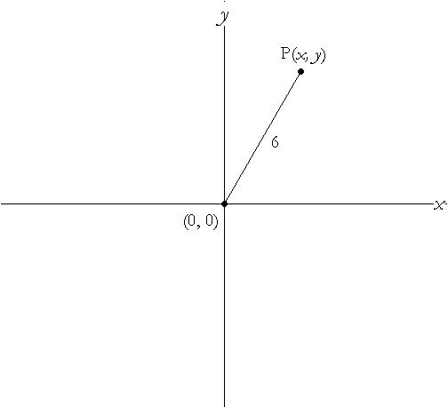

{% raw %}

<article>
<h1>Lesson 3:</h1><h1>Loci</h1>
  <section class="development">
    

    

    <h2>Introduction</h2>

    <p>Picture your favorite seat on a gently turning Ferris wheel,
    the hub of the wheel of a bicycle ridden along an undulating
    country road, that chip on the rim of the wheel of the old
    trolley as it hits the smooth flat road, or the middle rung of
    a ladder as the ladder slides down a wall and along the flat
    ground.</p>

    <figure>
      
    </figure>

    <figure>
      
    </figure>

    <figure>
      
    </figure>

    <figure>
      
    </figure>

    <figure>
      
    </figure>

    <figure>
      
      
    </figure>

    <div class="problem" data-problem-number="1">
      <p>Sketch the path of:</p>

      <p class="problem-part">. The Ferris wheel seat.</p>

      <p class="problem-part">. The wheel’s hub.</p>

      <p class="problem-part">. The chip on the rim of the wheel of
      the old trolley.
      (Experiment with this one a bit)</p>

      <p class="problem-part">. The ladder’s middle rung.
      (Experiment with this one a lot.)</p>
    </div>

    <p>To check your answer to problem 1d, try the webpage,
    http://homepage.mac.com/dscher/ladder.html</p>

    <p>These four familiar settings provide a peep into a very
    interesting concept in mathematics. In the first instance, you
    might have drawn a circle for the path of your favorite seat.
    Mathematicians would refer to this path as the locus (plural,
    loci) of the seat, and would perhaps state it more
    formally/awkwardly as follows:</p>

    <p>“The locus of the seat of the Ferris wheel is a circle whose
    center is the axis of the Ferris wheel and whose radius is
    equal to the distance from your seat to the axis.”</p>

    <p>So, in general, the locus of an object or point is the graph
    of all the possible positions the object or point could occupy
    under certain restrictions. This is the focus of our lesson. We
    will try to describe loci in words as well as in equations
    where possible, as well as to recognize shapes represented by
    particular equations.</p>

    <p>[For this lesson you will need to have a protractor, ruler
    and compass.]</p>

    <h2>Development</h2>

    <p>For each of problems 2 through 7 do the following:
    
    On a sheet of graph paper set up coordinate axes.
    Find a point which satisfies the stated condition, and label it
    P.
    Draw as many such points P as you can.
    Decide whether these points form any particular shape. If so,
    describe that shape.</p>

    <div class="problem" data-problem-number="2">
      <p>The x-coordinate of the point is 5.</p>
    </div>

    <div class="problem" data-problem-number="3">
      <p>The point is always equidistant from the two points
      \[A\left( {3, - 5} \right)\] and \[B\left( { - 1, - 3}
      \right)\] .</p>
    </div>

    <div class="problem" data-problem-number="4">
      <p>The x-coordinate of the point is always less than or equal
      to the y-coordinate of the point.</p>
    </div>

    <div class="problem" data-problem-number="5">
      <p>The distance of the point from the x-axis is always twice
      its distance from the y-axis.</p>
    </div>

    <div class="problem" data-problem-number="6">
      <p>The distance from the point to the origin is always 6.</p>
    </div>

    <div class="problem" data-problem-number="7">
      <p>First graph the points \[M\left( {2,3} \right)\] ,
      \[A\left( {6,3} \right)\] and \[C\left( {2,7} \right)\] . Now
      the restriction on a point P is that the points P, M, A and C
      must form a parallelogram. What is the locus of P?</p>
    </div>

    <p>Remember, when you describe something, be sure that your
    description is complete. It should thoroughly cover every
    aspect of what’s being described.</p>

    <p>Your description should also be unambiguous. This means that
    it should be completely clear, and not open to any different
    interpretations. You should ask yourself, “Would it be possible
    for the reader to read my description carefully, but
    misunderstand what I mean?” If so, you know you need to be more
    specific.</p>

    <p>Finally, your description should be understandable to the
    intended reader.</p>

    <p>One could describe the locus of P in problem 3 as the
    perpendicular bisector of the line segment AB. Describing a
    locus in words makes it relatively easy to draw the locus, but
    it is also useful to describe the locus with an equation or
    equations, when this is possible. An equation allows you to
    find specific locus points quite quickly.</p>

    <div class="problem" data-problem-number="8">
      <p>Returning to problem 3, in which P is always equidistant
      from the two points \[A\left( {3, - 5} \right)\] and
      \[B\left( { - 1, - 3} \right)\] , let the
      coordinates of P be \[\left( {x,y} \right)\] .</p>
    </div>

    <figure>
      
    </figure>

    <p class="problem-part">. The condition for P could be written
    “The distance from P to A is the same as the distance from P to
    B.” Using the coordinates and diagram above, translate this
    sentence into symbols.</p>

    <div class="problem" data-problem-number="9">
      <p>(continued)</p>

      <p class="problem-part">. In part a, you should have written
      an equation. Simplify this equation as much as possible.</p>

      <p class="problem-part">. Check your answer in part b for
      plausibility in a couple of ways.</p>
    </div>

    <p class="Development---Problem-Part para-style-override-1">.
    First check to see that the point \[(1, - 4)\] satisfies your
    equation in part b. Why must this be the case?</p>

    <p class="Development---Problem-Part para-style-override-1">i.
    Second, choose any other point whose coordinates satisfy your
    equation and do a calculation to see if the distance from that
    point to A and B is the same.</p>

    <div class="problem" data-problem-number="10">
      <p>Returning again to problem 3, let’s check to see if
      your
      description of the locus was indeed correct.</p>

      <p class="problem-part">. Find the slope and midpoint of
      \[\overline {AB} \] .</p>

      <p class="problem-part">. Use your answers for part a to find
      the equation of the
      perpendicular bisector of \[\overline {AB} \] .</p>
    </div>

    <div class="problem" data-problem-number="11">
      <p>Looking again at problem 6, with the help of distance
      formula
      or Pythagoras’ Theorem, write an equation to describe the
      path of the point P.</p>
    </div>

    <figure>
      
    </figure>

    <div class="problem" data-problem-number="12">
      <p>Write an equation/inequality for the locus in each of the
      following.&nbsp;Also, in each case check that your answer is
      plausible by seeing if a couple of easily tested points
      indeed satisfy your equation.</p>

      <p class="problem-part">. Problem 2 (P’s x-coordinate is
      5.)</p>

      <p class="problem-part">. Problem 4 (The x-coordinate of P is
      always less than or equal to the y-coordinate of P.)</p>

      <p class="problem-part">. Problem 5 (P’s distance from the
      x-axis is always twice its distance from the y-axis.)</p>
    </div>

    <div class="problem" data-problem-number="13">
      <p>The distance from P to the point is always 6.</p>

      <p class="problem-part">. Describe the locus of P.</p>

      <p class="problem-part">. Write an equation for the locus of
      P.</p>
    </div>

    <div class="problem" data-problem-number="14">
      <p>The distance from P to the point \[S\left( {h,k} \right)\]
      is always r.</p>

      <p class="problem-part">. Describe the locus of P.</p>

      <p class="problem-part">. Write an equation for the locus of
      P.</p>

      <p class="problem-part">. Check that your answer for part b
      is reasonable when h and k are negative numbers far from zero
      and r is a small positive number, and then check it again for
      when h and k are negative numbers close to zero and r is a
      large positive number.</p>
    </div>

    <div class="problem" data-problem-number="15">
      <p>Describe the locus of the point whose equation is:</p>

      <p class="problem-part">. \[{(x - h)^2} + {(y - k)^2} =
      {r^2}\]</p>

      <p class="problem-part">. \[{(x + 4)^2} + {(y + 13)^2} =
      100\]</p>
    </div>

    <div class="problem" data-problem-number="16">
      <p>The equation of the locus of point P is given. Describe or
      draw the graph of the locus. (Making a chart first could be
      quite useful.)</p>

      <p class="problem-part">. \[x + y = 10\]</p>

      <p class="problem-part">. \[x = \left| y \right|\]</p>

      <p class="problem-part">. \[{x^2} = {y^2}\]</p>
    </div>

    <div class="problem" data-problem-number="17">
      <p>One could argue that in some cases a description of a
      locus by equation is better than a description in words. What
      do you think? Give a couple of examples to support your
      position.</p>
    </div>

    <h2>Practice</h2>

    <div class="problem" data-problem-number="18">
      <p>In each case describe the graph and, if possible, write an
      equation for the locus of P.Make sure to check that the
      equations you come up with are plausible, by checking a
      couple of interesting and/or “extreme” points that “should”
      be part of the locus.</p>

      <p class="problem-part">. The x-coordinate of P is always
      7.</p>

      <p class="problem-part">. P’s distance from the y-axis is
      three times its distance from the x-axis.</p>

      <p class="problem-part">. P’s distance from the y-axis is
      always greater than its distance from the x-axis.</p>

      <p class="problem-part">. The distance from P to the origin
      is always less than 6.</p>

      <p class="problem-part">. Graph the points \[M\left( {5,3}
      \right)\] and . Triangle MPN is always isosceles with base
      \[\overline {MN} \] .</p>

      <p class="problem-part">. Graph the points and \[D\left( { -
      10,3} \right)\] . Triangle EPD is always equilateral.</p>
    </div>

    <div class="problem" data-problem-number="19">
      <p>Draw or describe the locus of a point P whose coordinates
      satisfy the equation \[3x + 4y = 12\] r .</p>
    </div>

    <div class="problem" data-problem-number="20">
      <p>Write an equation for the locus of a point which is always
      7 units from the point</p>

      <p class="problem-part">. .</p>

      <p class="problem-part">. .</p>
    </div>

    <div class="problem" data-problem-number="21">
      <p>Describe the locus of a point whose equation is given by
      \[{(x - 2)^2} + {(y + 4)^2} = 25\] .</p>
    </div>
  </section>

  <section>
    <p>(continued on next page)</p>
  </section>

  <section class="problems">
  <h2>Problems</h2>
    <div class="problem" data-problem-number="22">
      <p>Describe the following loci.</p>

      <p class="problem-part">. P is equidistant from the points
      \[A\left( {3,5} \right)\] , \[B\left( {3,8} \right)\] and
      \[C\left( {10,8} \right)\] .</p>

      <p class="problem-part">. P is equidistant from the points
      \[A\left( {3,5} \right)\] , \[B\left( {3,8} \right)\] , and
      .</p>

      <p class="problem-part">. P always forms a triangle with the
      points , .</p>
    </div>

    <div class="problem" data-problem-number="23">
      <p>Describe the locus given by each of the following
      equations:</p>

      <p class="problem-part">. \[{x^2} - 4x + 4 + {y^2} + 8y + 16
      = 25\]
      (Hint: recall that \[{x^2} - 4x + 4 = {\left( {x - 2}
      \right)^2}\] and \[{y^2} + 8y + 16 = {\left( {y + 4}
      \right)^2}\] .)</p>

      <p class="problem-part">. \[{x^2} + 6x + 9 + {y^2} - 10y + 25
      = 1\]</p>

      <p class="problem-part">. \[{x^2} + 10x + {y^2} - 6y =
      15\]</p>
    </div>

    <div class="problem" data-problem-number="24">
      <p>If you wish to plant some trees so that each tree is
      equidistant from every other tree, how many trees are you
      able to plant?</p>
    </div>

    <div class="problem" data-problem-number="25">
      <p>Graph the points and . In each case describe the locus of
      P . (You might want to do some careful drawing.)</p>

      <p class="problem-part">. P is such that \[PJ + PL\] is equal
      to 16 units.</p>

      <p class="problem-part">. P is such that \[PJ + PL\] is equal
      to 18 units.</p>
    </div>

    <div class="problem" data-problem-number="26">
      <p>Graph the points A and B\[\left( {0,7} \right)\] . P is
      always 4 units from the line segment AB. Describe the locus
      of P.</p>
    </div>

    <div class="problem" data-problem-number="27">
      <p>What would the locus of the points a distance 6 from
      \[\left( {0,0} \right)\] be if one could only move an
      integral amount left/right and up/down?</p>
    </div>

    <div class="problem" data-problem-number="28">
      <p>Graph the points \[M\left( {2,3} \right)\] , \[A\left(
      {5,7} \right)\] and . Point P is such that the points P, M, A
      and C always form a parallelogram. Describe the locus of P as
      fully as possible.</p>
    </div>

    <p>With harder problems that have formulas that you are
    deriving, a plausibility check is a necessity, as it is all too
    easy to make a conceptual or algebraic mistake when coming up
    with the equation, and a plausibility check is a quick way to
    see if you have made some kind of error. For the next few
    problems be sure to make a plausibility check so that you can
    be more confident your answer isn’t flawed.</p>

    <div class="problem" data-problem-number="29">
      <p>Graph the points \[R\left( {5,0} \right)\] and . Point P
      is such that the angle RPS is
      always a right angle.</p>

      <p class="problem-part">. Describe the locus of P. (Carefully
      plot points on graph paper, using a protractor or some object
      with a \[{90^o}\] angle.)</p>

      <p class="problem-part">. Write an equation for the locus of
      P.</p>

      <p class="problem-part">. What general statement do (a) and
      (b) suggest?</p>
    </div>

    <div class="problem" data-problem-number="30">
      <p>Point P is such that its distance from the point \[\left(
      {0,2} \right)\] is the same as its distance from the line\[y
      = - 2\] .</p>

      <p class="problem-part">. Carefully sketch the locus of
      P.</p>

      <p class="problem-part">. Describe the shape of the
      locus.</p>

      <p class="problem-part">. Write and simplify an equation for
      the locus.</p>
    </div>

    <div class="problem" data-problem-number="31">
      <p>Construct a locus problem different from the ones you have
      encountered in this
      lesson.</p>
    </div>

    <div class="problem" data-problem-number="32">
      <p>Graph the points \[M\left( {5,3} \right)\] and . Triangle
      MPN is always isosceles. What is the locus of P?</p>
    </div>

    <div class="problem" data-problem-number="33">
      <p>Graph the points \[R\left( {5,0} \right)\] and . Point P
      is such that the measure of \[\angle RPS\] is always \[{30^
      \circ }\] . The locus of P seems to be two pentagons, one at
      the top of \[\overline {RS} \] and one at the bottom. What do
      you think? Be sure to make a cogent argument.</p>
    </div>

    <div class="problem" data-problem-number="34">
      <p>The diagram below models the ladder problem of problem 1.
      Find the equation of the locus of the midpoint of the ladder
      \[\overline {AB} \] as A slides along the wall and B along
      the ground. (Hint: besides the length of the ladder another
      length remains
      constant throughout the motion.)</p>
    </div>

    <figure>
      
    </figure>

    <div class="problem" data-problem-number="35">
      <p>E is the point \[\left( {3,5} \right)\] and T is the point
      \[\left( {3,11} \right)\] . Describe and find an equation for
      the locus of P, given that the area of
      triangle EPT is always 12 \[{\rm{c}}{{\rm{m}}^{\rm{2}}}\]
      .</p>
    </div>

    <div class="problem" data-problem-number="36">
      <p>In the spiders and flies game, flies fly in circles and
      spiders crawl on horizontal lines. In this particular game,
      the flies must fly in circles with center \[\left( {0,1}
      \right)\] .
      
      And here is the rule for spiders:
      Spiders crawling on a line r units from the x-axis can only
      catch flies that are moving on the circle whose radius is
      r.
      
      So flies will be caught at the points P and Q in the diagram
      below.</p>
    </div>

    <figure>
      
    </figure>

    <p class="problem-part">. Suppose flies were flying on the
    circle with radius 5. At what point would they be caught by
    spiders?</p>

    <p class="problem-part">. Would any flies be caught at the
    point ? How about the points \[\left( {1,1} \right)\] ,
    \[\left( {3,3} \right)\] and ?</p>

    <p class="problem-part">. Carefully sketch the locus of the
    point where a spider catches a fly.</p>

    <p class="problem-part">. Describe the shape of the locus.</p>

    <p class="problem-part">. Write and simplify an equation for
    the locus.</p>

    <div class="problem" data-problem-number="37">
      <p>In one spiders and flies game in problem 35 the equation
      of the locus of the capture is \[y = 4{x^2}\] 럻 . What are
      the rules for this particular game?</p>
    </div>

    <div class="problem" data-problem-number="38">
      <p>Don’t use a calculator for this problem.</p>

      <p class="problem-part">. Reduce: $\frac{{{a^2} - {b^2}}}{{a
      + b}}$</p>

      <p class="problem-part">$b$. Separate and reduce:
      $\frac{{\sqrt x + {x^2}}}{{\sqrt {{x^3}} }}$</p>

      <p class="problem-part">$c$. Simplify:</p>

      <p class="problem-part">$d$. Simplify: $\frac{{{4^{ - 1}} +
      {4^0} + {4^{\frac{1}{2}}}}}{{{4^{ - 1}} - {4^{\frac{{ -
      1}}{2}}}}}$</p>

      <p class="problem-part">e. If ${2^x} = 7$ , what is the value
      of ${2^{2x + 1}}$ ?</p>
    </div>
  </section>

  <section>
    <h2>Exploring
    in
    Depth</h2>
  </section>
</article>

{% endraw %}

